Making AI model access understandable
As AI models are shared across enterprise teams, administrators have to piece together permissions, usage limits, and model configuration to understand who can use what. I redesigned governance in Red Hat OpenShift AI around those relationships, giving administrators a connected way to audit access, trace problems, and spot gaps in the setup.
- My role
- Primary UX Designer
- Timeline
- 2 months
- Product
- Red Hat OpenShift AI
- Team
- 2 Product Managers, 3 frontend engineers, 3 backend engineers, 1 Principal UX Designer, 1 Content Designer, 4 Field and Customer Adoption specialists, and me
- Tools used
- Cursor, Figma, Miro, Google Docs
The challenge
Administrators had to piece together models, groups, permissions, and usage limits across separate pages. That made incomplete setup hard to spot and urgent access problems harder to investigate.
My contribution
I led the workflow workshop, reframed the problem, explored and tested interactive directions, revised the navigation, and partnered with product, engineering, UX, and customer-facing specialists.
What shipped
A new Overview page, updated MaaS Governance navigation, and improved Subscription and Authorization Policy settings pages.
A short demo of the redesigned experience
Silent walkthrough (1:04 mins): Expand a model row, inspect its related subscriptions and authorization policies, and select a group label to trace its connections. Use handy filters to see specific information. The decisions behind these interactions follow below.
Two settings determine access to a shared model
Red Hat OpenShift AI (RHOAI) helps organizations develop, deploy, and manage AI models. Its Models-as-a-Service (MaaS) capability lets teams use shared language models through governed access. Administrators manage access for user groups, which can represent teams within an organization.
For a group to use an available model, two things need to be in place: access and a subscription. An authorization policy gives the group access to the model’s endpoint, while a subscription defines how much the group can use the model by setting token rate limits, which control the amount of text it can process over time.
Neither setting alone tells the full story. An administrator needs to see the model, group, authorization policy, and subscription together to understand whether access has been configured.
A simplified concept diagram mapped during discovery to illustrate how models, groups, policies, and subscriptions connect.
Models
Available models
- Granite-3B
- Mistral-7B
- Llama-3-8B
- GPT-4o-mini
Unavailable models
- Phi-3
- Claude-3.5
Unavailable models are never callable, even if governed.
Groups
data-science
user #1 · user #2 · user #3
analytics
user #2 · user #5 · user #11 · user #13
engineering
user #4 · user #6 · user #7 · user #8 · user #9
Authorization policies Who is permitted to call a model?
Policy A
Groups data-science, analytics
Models Granite-3B, Mistral-7B, Phi-3
Policy B
Groups engineering
Models Granite-3B, Llama-3-8B
Subscriptions What usage allowance applies?
Subscription 1
Groups data-science
Models Granite-3B, Mistral-7B, Phi-3
Subscription 2
Groups engineering
Models Granite-3B, Llama-3-8B
Can they call it?
Can data-science call Granite-3B?
- Are both in an authorization policy? Yes, Policy A
- Are both in a subscription? Yes, Subscription 1
- Is the model available? Yes
Callable
Can analytics call Granite-3B?
- Are both in an authorization policy? Yes, Policy A
- Are both in a subscription? No matching subscription
- Is the model available? Yes
Not callable
Can data-science call Phi-3?
- Are both in an authorization policy? Yes, Policy A
- Are both in a subscription? Yes, Subscription 1
- Is the model available? No
Not callable
An end-to-end journey flow revealed deeper problems
The project brief
The project brief described how administrators had to compare similar-looking Subscription and Authorization Policy tables to work out which groups could use a model and what limits applied. To connect a group’s permission with its usage allowance, they opened details, remembered names, switched pages, and compared the information manually. My initial hypothesis was that administrators struggled because Subscription and Authorization Policy information was separated across Settings. That described the interface, but it did not yet explain which relationships mattered in a real investigation or what someone needed to do next.
Before · Subscriptions

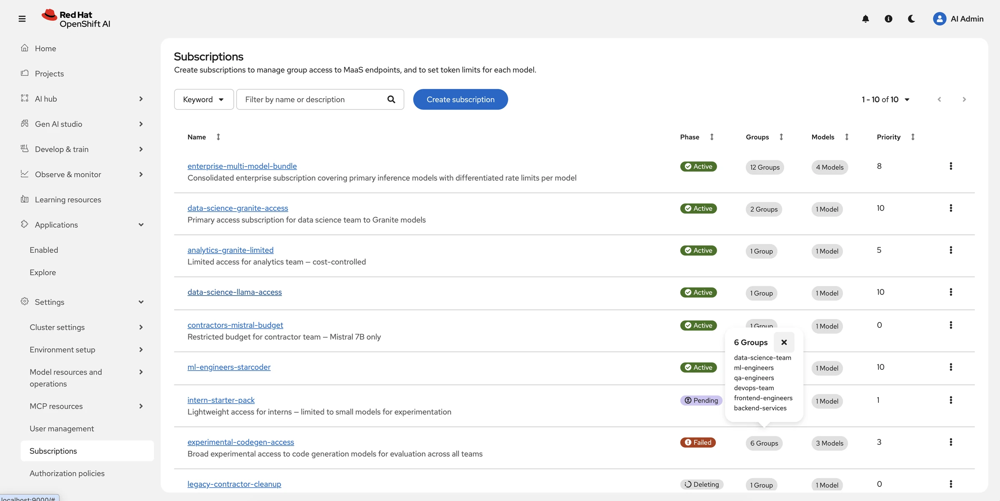
EnlargeBefore · Authorization policies

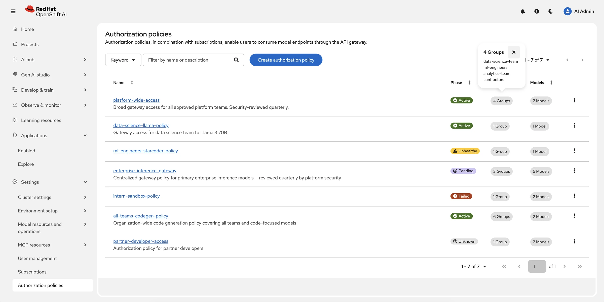
EnlargeMapping the end-to-end journey
I led a workshop with product managers, engineers, and a UX colleague. Using existing product personas, I mapped the journey from making a model available to configuring access, using it, and investigating problems. I drafted job stories with Cursor, then edited them for accuracy. In the workshop we challenged assumptions, identified gaps, and prioritized opportunities.
High-level user flow: From publishing a model to using it

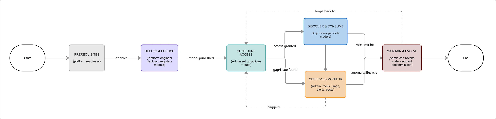
EnlargeBreaking down the journey into job stories, questions, gaps, and opportunities

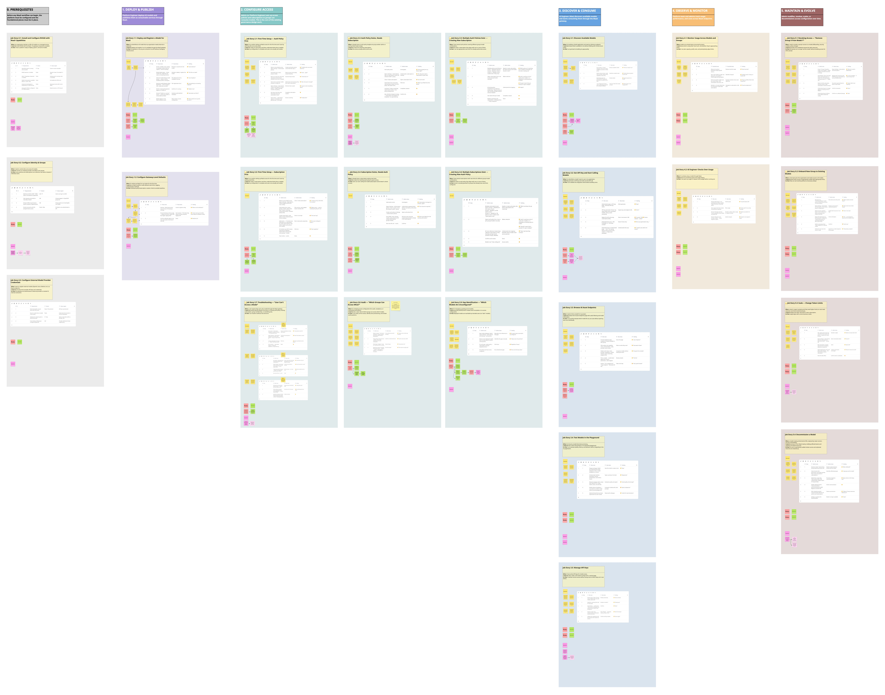
EnlargeA closer look at how Jobs-to-be-Done framework was connected with user sentiment
Job Story 2.1 · First-time setup

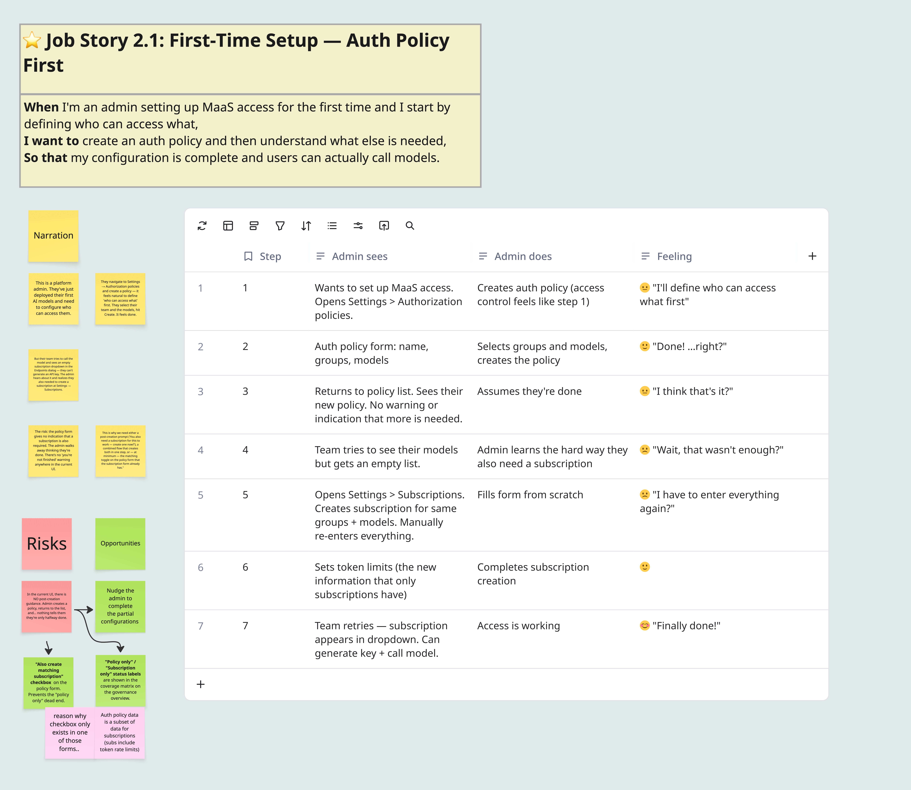
EnlargeJob Story 2.9 · Gap identification

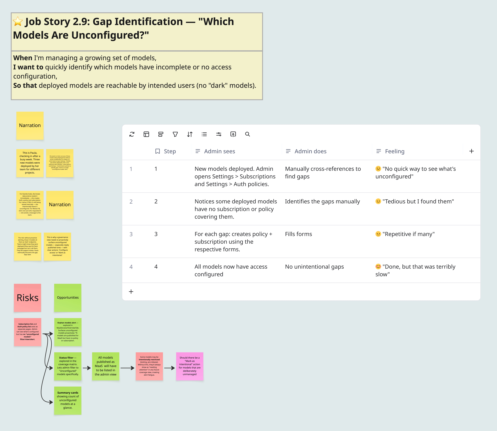
EnlargeTest the assumptions with people close to customers
My initial discovery and the workshop exposed more than a page-switching problem. A newly published model could be missing one or both access settings, yet administrators had no single place to see that gap. The model’s availability also lived outside the Settings area. In the resource tables, counts hid group and model names in small, scrollable popovers. Those choices made it difficult to scan coverage, especially as the number of models and groups grew.
Creation forms raised a related problem: administrators could not see the corresponding policy or subscription while filling one out. They could duplicate coverage, create only part of a group–model relationship, or finish one form thinking access was ready. I explored those form opportunities, but the investigation view became the priority.
To make those possibilities concrete, I rapidly prototyped several screens and reviewed them with a Principal UX Designer. We compared a topology-style relationship map and table-based approaches, weighed how quickly each could lead to an answer, and narrowed the options before speaking with a Field and Customer Adoption specialist. The prototype was a way to test our understanding, not a final answer.
In that conversation, a real escalation sharpened the need: users might report that their group had run out of tokens, and an administrator needed to find its allowance and the relevant settings quickly. The specialist helped us focus on the questions the interface had to answer: “Who can use this model?” and “What can this team use?”
Rapid ideation and brainstorming

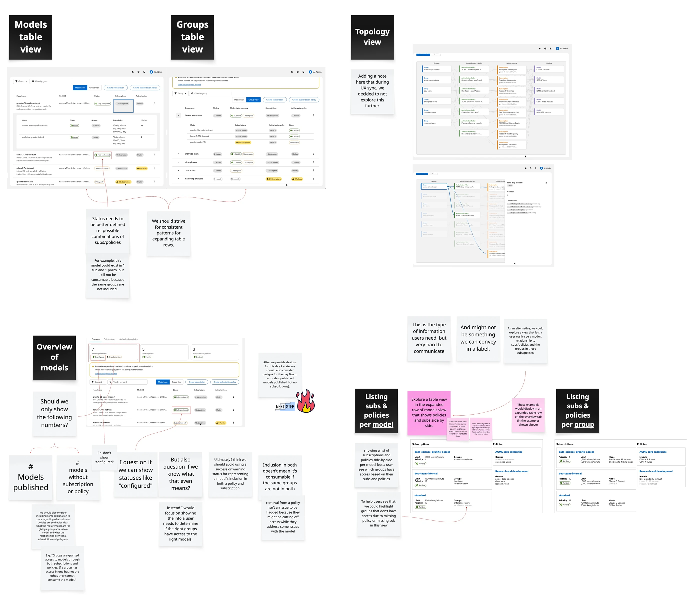
EnlargeReview the investigation flow with a customer-facing specialist

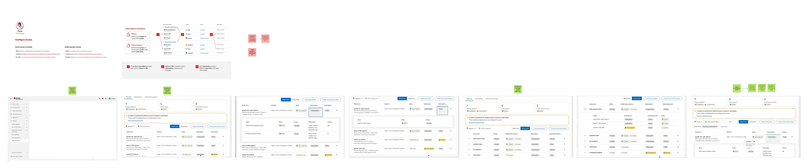
EnlargeMaking model access easier to see and investigate
When an administrator needs to configure or troubleshoot access to a shared AI model, they need to see which groups can use it, what limits apply, and which setting is missing or needs attention. That relationship was spread across separate views, forcing them to reconstruct it from memory before they could act.
The most urgent cases started with a model or a group. A useful view had to show the connections from either starting point, distinguish complete from incomplete setup, and lead to the underlying subscription or policy. It also had to work when many models and groups were involved.
Where the previous experience broke down
Before · Subscriptions

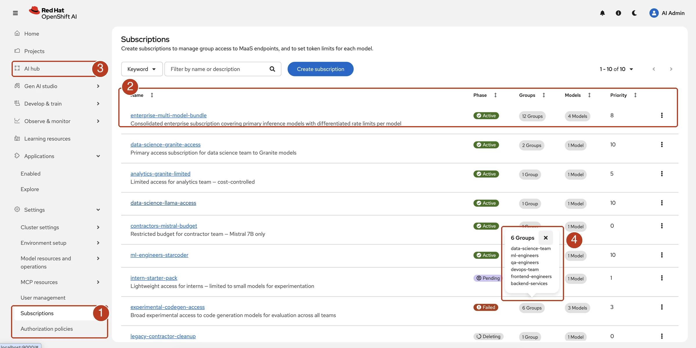
Enlarge- 1Subscriptions and authorization policies lived on separate Settings pages. Administrators had to move between them to investigate access.
- 2The table listed existing subscriptions, not all models. Models with no subscription or policy had no place in this view.
- 3Model availability had to be checked elsewhere in the product.
- 4Group and model names were hidden behind counts. Small, scrollable popovers made the lists difficult to scan.
Before · Authorization policies

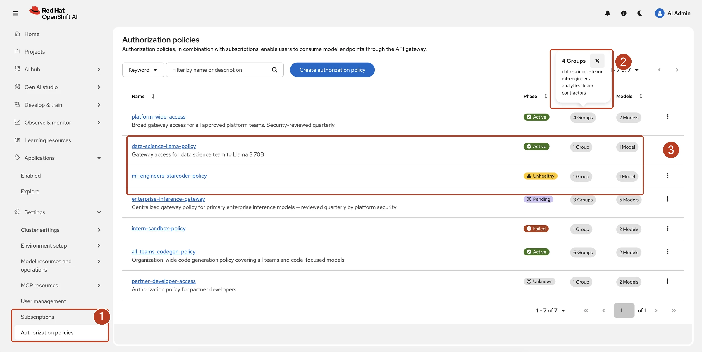
Enlarge- 1The settings navigation was separate from the governance view, so administrators had to move between pages.
- 4The same popover pattern appeared in the policy table, adding another list to inspect.
- 5A policy could cover several groups and models. Administrators still had to find the matching subscription and compare its groups manually; that became harder at scale.
Make the relationships visible, then let people follow the detail
Organize the page around the administrator’s question
I proposed one MaaS Governance area with an Overview and supporting Subscriptions and Authorization Policies tabs. The Overview would group information by model or by group, matching the two questions from discovery. The existing resource views would remain available for someone who already knew which subscription or policy they wanted to inspect.
Weigh the alternatives
I explored side-by-side governance cards, compound table expansion, and a topology-style map. The map made connections explicit but added navigation complexity. The table-based Overview offered a clearer path to investigation: an administrator could start with a Model or Group, expand a row, and compare subscriptions and authorization policies in one place. The two perspectives answered complementary questions without changing the underlying relationship model.
Check the data and feasibility
Engineering had to validate the data shape. The underlying APIs, the interfaces the frontend uses to request data, list subscriptions and policies, each naming models. They do not return a model with all its access settings attached. Frontend and backend engineers confirmed a joined Overview was feasible without a visibly slow page. That let us choose the clearer interaction rather than letting the API structure dictate the interface.
Exploration · Compound expansion

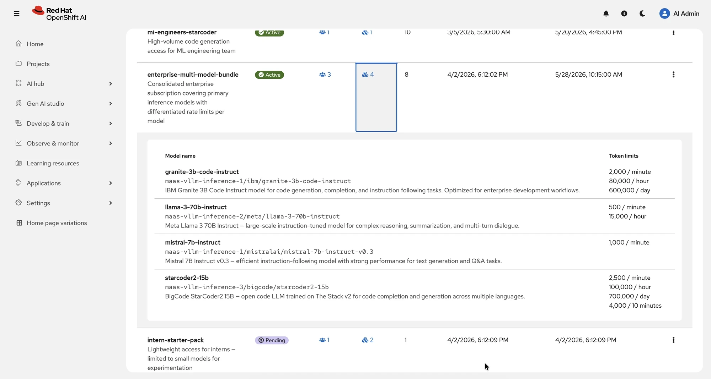
EnlargeThe table pattern kept detail close to its row, but relationships still had to be compared across resource types.
Exploration · Side-by-side resources

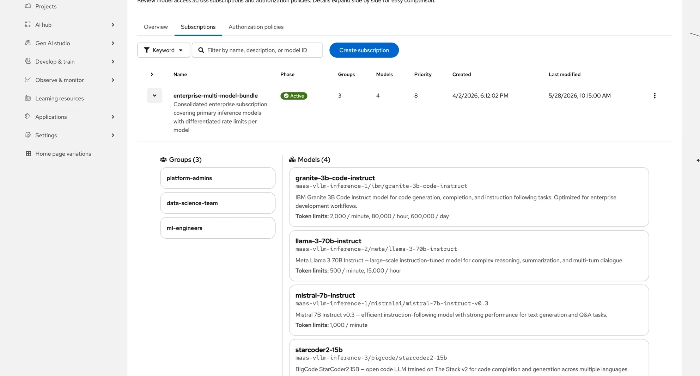
EnlargePlacing both resource types together made the relationship itself the focus of investigation.
Show the exact group relationship
An Overview count could say a model had both kinds of setting while concealing that they covered different groups. I made group names visible in the expanded row and added a way to select one. Selecting a group highlights its matching subscription and authorization policy cards, so an administrator can follow that group to its allowance and permission without losing the surrounding context. This helps locate configuration; it does not show live token consumption.
I iterated on the card structure, expansion behavior, labels, color, and spacing to keep the view scannable. The interaction emerged from the escalation scenario: finding the affected group quickly was more important than simply displaying every relationship at once.
After · Trace matching groups across both columns

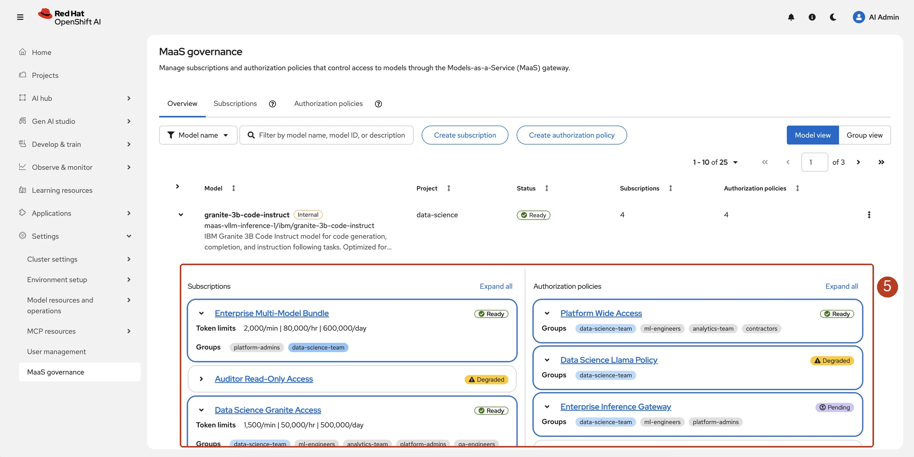
Enlarge- 1Selecting a group highlights its matching cards across the two columns. An administrator can connect permission with the relevant allowance without remembering names across pages.
Follow a group across the expanded model row
Select a group label, such as platform-admins, to reveal its matching subscriptions and authorization policies. Select it again to clear the highlight.
- Subscriptions
- 4
- Authorization policies
- 4
Subscriptions
- Token limits
- 2,000 / min · 80,000 / hr · 600,000 / day
Groups
Matching group
- Token limits
- 100 / min · 1,000 / day
Groups
Matching group
- Token limits
- 1,500 / min · 50,000 / hr · 500,000 / day
Groups
Matching group
- Token limits
- 500 / min · 10,000 / hr · 80,000 / day
Groups
Matching group
Authorization policies
Groups
Matching group
Groups
Matching group
Groups
Matching group
Groups
Matching group
Select any group label to find it across both columns.
Give each supporting table a clear job
The Overview explains relationships. The Subscriptions and Authorization Policies tabs let administrators inspect a known setting. For those tables, I compared side-by-side cards with PatternFly compound expansion, a pattern from our design system that reveals details within the table row. Customer-facing reviewers preferred expansion here: it kept the surrounding rows visible while they inspected group and model names. The Overview used expansion for a different purpose: to compare connected resources and trace relationships.
I also explored creation-form improvements, including showing related settings while someone edits and helping prevent partial coverage. We prioritized the Overview and supporting resource tables; broader form changes remained a separate opportunity. Teams using GitOps, where configuration is managed through version-controlled files, raised another practical need: the underlying YAML configuration file had to remain easy to reach from the relevant resource.
Before · Names hidden in the subscription table

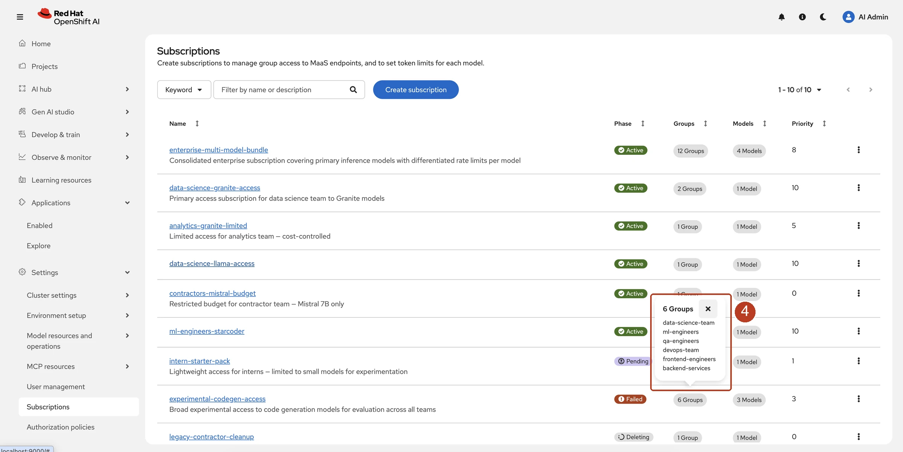
Enlarge- 1The small popover constrained the space available for a group or model list.
After · Expanded subscription names stay in the table

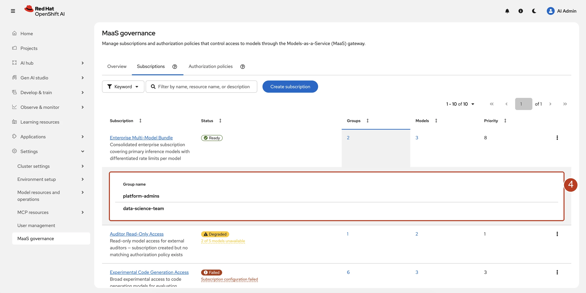
Enlarge- 1Compound expansion gives the list a full-width area while keeping the surrounding rows visible.
Before · Names hidden in the policy table

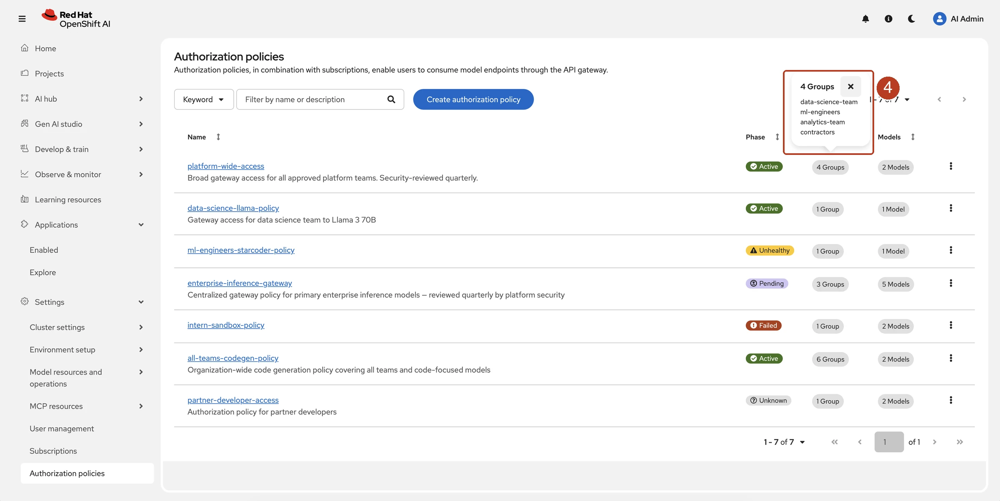
Enlarge- 2Policy groups also required a separate popover.
After · Expanded policy names use the same pattern

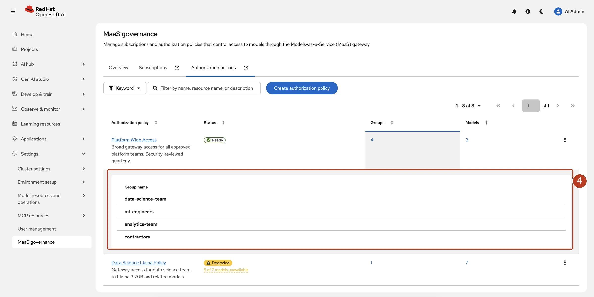
Enlarge- 2The policy table uses the same expansion pattern, so administrators do not have to learn a second interaction.
Configuration stays close to the resource · YAML in details

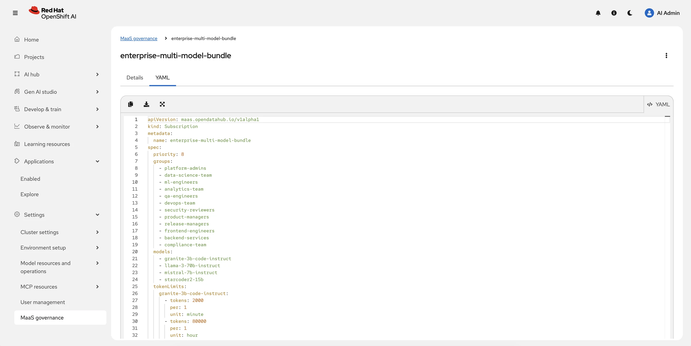
EnlargeInspect details without losing the table · Subscriptions
Silent walkthrough (0:34 mins): The supporting Subscription table, including expanded detail and resource inspection.
Inspect details without losing the table · Authorization policies
Silent walkthrough (0:32 mins): The supporting Authorization Policy table and its inspection controls.
Prioritize the core investigation and refine it through feedback
In a weekly UX, product, and engineering review, we checked feasibility, agreed on the revised navigation, and broke the work into deliverable pieces. The Overview was the first priority, with Model and Group perspectives tied to the questions from discovery. I shared working prototypes so reviewers could expand rows, filter results, and try the group-highlighting behavior rather than judging static screens alone.
Cursor let me make several interaction ideas tangible quickly. The framing and decisions came from the workshop, specialist feedback, design critique, and engineering review.
I then refined the Model and Group rows, resource cards, configuration states, and supporting tables with engineering and Content Design. Customer-facing specialists responded strongly to the Overview and helped us select the compound expansion pattern for the resource tables. Early feedback made it possible to improve the design while it could still change.
I separated the relationship-focused Overview from the supporting resource tables in handoff. Form improvements remained a distinct opportunity, while the core investigation flow stayed focused on the questions administrators needed to answer.
The full set of views and states, refined together

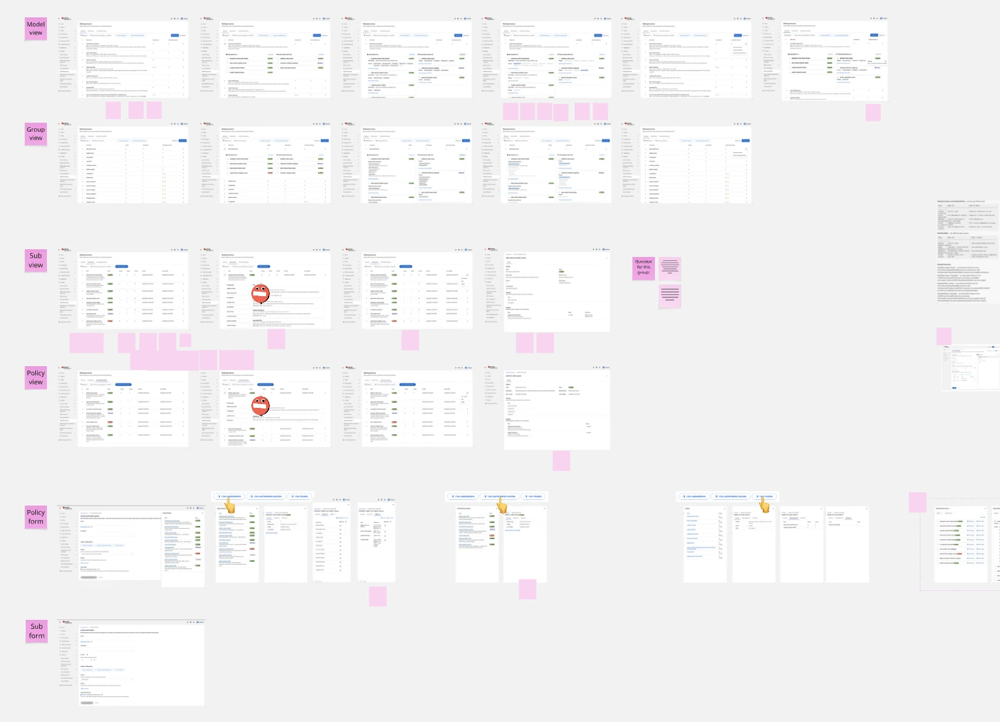
EnlargeA clearer path from an access question to the setting behind it
The redesigned MaaS Governance experience brought access relationships into an Overview, alongside improved Subscription and Authorization Policy tables. The design supports Model and Group perspectives so an administrator can begin with the question they have, inspect related settings, trace matching labels and cards, and identify incomplete configuration without comparing separate resource pages.
Customer-facing specialists welcomed the direction, especially the ability to inspect access relationships without reconstructing them across pages.
I estimated the potential audience at more than 1,000 RHOAI administrators globally. Red Hat does not publicly disclose a global administrator count, so this is an approximate audience estimate, not a usage or outcome metric. I do not yet have reliable task-success data, so I cannot claim a measured reduction in troubleshooting time or configuration errors.
The next evaluation should observe administrators completing real tasks: identify a group’s access, find an incomplete connection, and locate its usage limit. Task success, time, and confidence would show whether the new view delivers the improvement it was designed for.
Before · Reconstruct access across pages
Enlarge- 1Separate settings views required page switching.
- 2A model without resources was absent from the list.
- 3Availability had to be checked elsewhere.
After · See the missing setting from the model

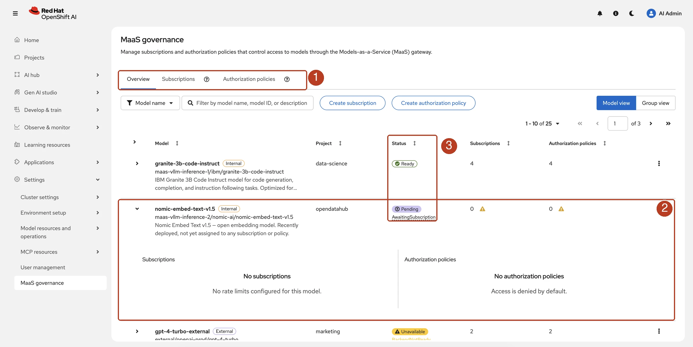
Enlarge- 1Overview, Subscriptions, and Authorization policies share one governance area.
- 2The model remains visible with zero subscriptions and zero policies; the expanded row explains each gap.
- 3The model’s status is visible alongside its access settings.
Model view · Start with a model to investigate access
Silent walkthrough (1:04 mins): Expand a model row, inspect its related subscriptions and authorization policies, and select a group label to trace its connections. Use handy filters to see specific information.
Group view · Start with a team to investigate access
Silent walkthrough (0:53 mins): switch to Group view, expand a group, and inspect the related models, subscriptions, and authorization policies. This perspective addresses “What can this team use?”